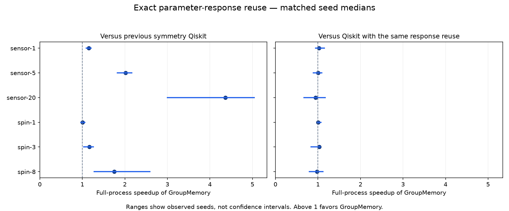

# Exact parameter-response memory: measured comparison Ideal CPU simulation of two supported shallow architectures. No QPU execution. Successful attempts: 540/540. Matched blocks: 90/90. Maximum output/trajectory error: 3.62e-14; the absolute tolerance remains 1e-10. Primary time includes the entire fresh process: imports, data, circuit compilation, all response probes and off-grid checks, cache planning, training, predictions, serialization and shutdown. The parent ledger and independent tests/reporting are separate. Application clocks may include lazy imports and are not uniformly warm-service timings. | Workload | Group response | Previous symmetry Qiskit | Qiskit + response | Analytic same model | Classical task | Accuracy: same model / task | |---|---:|---:|---:|---:|---:|---:| | sensor-1 | 1.696 s | 1.990 s | 1.743 s | 1.256 s | 1.271 s | 0.863 / 1.000 | | sensor-5 | 1.853 s | 3.560 s | 1.854 s | 1.290 s | 1.348 s | 0.950 / 1.000 | | sensor-20 | 2.156 s | 9.519 s | 2.080 s | 1.590 s | 1.428 s | 0.988 / 1.000 | | spin-1 | 0.394 s | 0.397 s | 0.401 s | 0.110 s | 1.284 s | 1.000 / 1.000 | | spin-3 | 0.386 s | 0.456 s | 0.385 s | 0.108 s | 1.371 s | 1.000 / 1.000 | | spin-8 | 0.395 s | 0.682 s | 0.389 s | 0.112 s | 1.303 s | 1.000 / 1.000 | ## Paired runtime and native work Ratios are medians of matched per-seed ratios, not ratios of marginal medians. A descriptive win requires five complete seeds with at least three matching trials each, all seed medians faster, and at least 5% median paired saving. This is not a significance or universal claim. | Workload | Baseline | Paired speedup | Seed range | Meets rule | |---|---|---:|---:|---| | sensor-1 | Qiskit + same response | 1.027× | 0.946–1.152× | False | | sensor-1 | Previous GroupMemory | 1.141× | 1.070–1.184× | True | | sensor-1 | Previous symmetry Qiskit | 1.151× | 1.089–1.208× | True | | sensor-1 | Analytic identical model | 0.740× | 0.681–0.791× | False | | sensor-1 | Classical task model | 0.750× | 0.681–0.755× | False | | sensor-5 | Qiskit + same response | 1.006× | 0.889–1.092× | False | | sensor-5 | Previous GroupMemory | 1.975× | 1.813–2.050× | True | | sensor-5 | Previous symmetry Qiskit | 2.015× | 1.822–2.163× | True | | sensor-5 | Analytic identical model | 0.739× | 0.685–0.771× | False | | sensor-5 | Classical task model | 0.760× | 0.726–0.780× | False | | sensor-20 | Qiskit + same response | 0.941× | 0.672–1.171× | False | | sensor-20 | Previous GroupMemory | 4.573× | 3.033–4.869× | True | | sensor-20 | Previous symmetry Qiskit | 4.363× | 2.999–5.041× | True | | sensor-20 | Analytic identical model | 0.737× | 0.522–0.789× | False | | sensor-20 | Classical task model | 0.679× | 0.438–0.747× | False | | spin-1 | Qiskit + same response | 1.007× | 0.990–1.071× | False | | spin-1 | Previous GroupMemory | 1.113× | 0.998–1.147× | False | | spin-1 | Previous symmetry Qiskit | 1.009× | 0.965–1.057× | False | | spin-1 | Analytic identical model | 0.280× | 0.257–0.300× | False | | spin-1 | Classical task model | 3.366× | 3.084–3.749× | True | | spin-3 | Qiskit + same response | 1.032× | 0.837–1.053× | False | | spin-3 | Previous GroupMemory | 1.181× | 1.068–1.262× | True | | spin-3 | Previous symmetry Qiskit | 1.164× | 1.034–1.261× | True | | spin-3 | Analytic identical model | 0.275× | 0.264–0.306× | False | | spin-3 | Classical task model | 3.675× | 2.781–4.154× | True | | spin-8 | Qiskit + same response | 0.977× | 0.795–1.116× | False | | spin-8 | Previous GroupMemory | 1.667× | 1.267–1.960× | True | | spin-8 | Previous symmetry Qiskit | 1.753× | 1.281–2.588× | True | | spin-8 | Analytic identical model | 0.281× | 0.234–0.340× | False | | spin-8 | Classical task model | 3.444× | 2.590–4.270× | True | | Workload | Group native CNOT work | Previous symmetry Qiskit | Qiskit + response | |---|---:|---:|---:| | sensor-1 | 1920 | 960 | 1920 | | sensor-5 | 1920 | 2240 | 1920 | | sensor-20 | 1920 | 7040 | 1920 | | spin-1 | 768 | 960 | 768 | | spin-3 | 768 | 2112 | 768 | | spin-8 | 768 | 4992 | 768 | CNOT work counts actual native probe/direct forward simulations. Sensor reverse gradients are classical state propagations, so their work is included in time but not this forward CNOT count. Avoided executions do not shorten the underlying circuit. The identical-response Qiskit control receives the same basis, probes, verification policy and cache lifetime. A win over the previous baseline establishes the value of parameter-response reuse, not an exclusive GroupMemory advantage. The analytic control computes the identical circuit outputs and derivatives without any Qiskit probes. These architectures admit efficient classical formulas. Task-model accuracy and timing concern a different learner; all held-out views are not independent data. Sum of method process walls: 942.125 s. Latest parent loop wall: 943.618 s.